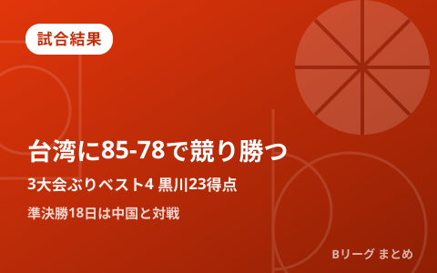

男子日本代表、3大会ぶりベスト4進出 チャイニーズ・タイペイに85-78で競り勝つ 黒川虎徹23得点、準決勝は18日に中国と対戦

第20回アジア競技大会（愛知・名古屋2026）バスケットボール男子準々決勝が9月16日、愛知国際アリーナで行われ、男子日本代表がチャイニーズ・タイペイに85-78で勝利しました。前回大会の同カードで敗れた相手にリベンジを果たし、3大会ぶりとなるベスト4進出を決めています。第4クォーターには猛追を受けて7点差まで詰め寄られる場面もありましたが、ベテラン勢の踏ん張りで逃げ切りました。準決勝は9月18日（金）19時20分から、同じ愛知国際アリーナで中国と対戦します。
第1Qの7-0ランでリード奪取、前半で12点差に広げるも第4Qは7点差まで追い上げられる
試合は第1クォーター中盤、小川敦也の3ポイントシュートを皮切りにアレックス・カークのミドルジャンパー、黒川虎徹のレイアップと7-0のランを決めた日本が主導権を握りました。第1クォーターを終えて16-9とリードすると、第2クォーターにはリードを最大12点差まで広げる時間帯もあり、優位に試合を進めました。しかし最終第4クォーターに入るとチャイニーズ・タイペイが猛攻を仕掛け、一時7点差まで詰め寄る場面も。それでもカークらベテラン勢が踏ん張り、85-78で試合を締めくくりました。
黒川虎徹がチーム最多23得点、小川敦也15得点・カークは12得点8リバウンド
この日のゲームハイは黒川虎徹でした。3ポイントシュートを3本沈めるなどチーム最多の23得点をマーク。小川敦也も15得点と好調で、ベテランのアレックス・カークは12得点8リバウンドとインサイドを支えました。若手とベテランが得点を分け合う形で、接戦を制する原動力となりました。
| 選手 | 成績 |
|---|---|
| 黒川虎徹 | 23得点（3P 3本） |
| 小川敦也 | 15得点 |
| アレックス・カーク | 12得点 8リバウンド |
3大会ぶりのベスト4、前回大会の雪辱を果たす
男子日本代表がアジア競技大会でベスト4に進出するのは3大会ぶりです。今大会は1次リーグをグループA2勝1敗・全体4位で通過し、準々決勝では前回大会で敗れた相手でもあるチャイニーズ・タイペイと対戦。今回はその雪辱を果たし、大会12年ぶりとなるメダル獲得に王手をかけました。準決勝の相手は1次リーグを勝ち上がった中国で、勝てば決勝進出、負けても3位決定戦でメダル獲得のチャンスが残ります。
| 日程 | ラウンド | 対戦相手 | 結果 |
|---|---|---|---|
| 9月13日（日） | 1次リーグ | vs 大韓民国 | 83-100 敗戦 |
| 9月16日（水） | 準々決勝 | vs チャイニーズ・タイペイ | 85-78 勝利 |
| 9月18日（金）19:20〜 | 準決勝 | vs 中国 | これから |
準決勝は18日19時20分から愛知国際アリーナで中国と対戦
準決勝は9月18日（金）19時20分より、準々決勝と同じ愛知国際アリーナ（IGアリーナ）で行われます。相手の中国は1次リーグを勝ち上がってきた強豪で、勝利すれば大会決勝進出、金メダルへ大きく前進します。アジア競技大会のバスケットボール競技は地上波TBS系列のほか、TVerやU-NEXTでも配信されており、準決勝の詳しい放送・配信予定は大会公式サイトでの発表をご確認ください。
Q. 「3大会ぶりのベスト4」とはどういう意味？
A. 男子日本代表がアジア競技大会の準決勝（ベスト4）に進出するのが3大会ぶりであることを意味します。今大会は前回大会で敗れたチャイニーズ・タイペイに準々決勝でリベンジを果たしての進出となりました。
出典：TBS NEWS DIG「バスケ男子日本代表、3大会ぶりのベスト4進出 前回大会敗れた相手に85－78で勝利 準決勝18日は中国と対決」／バスケットボールキング「バスケ男子日本代表がアジア大会準決勝進出…4Qに猛追受けるもチャイニーズ・タイペイに辛勝」／同「バスケ男子日本代表が12点リードし前半終了…チャイニーズ・タイペイと熱戦」／デイリースポーツ「バスケ男子 日本が４強入りでメダル王手！第４Ｑ猛追受けヒヤリも台湾に競り勝つ」ほか
https://news.yahoo.co.jp/articles/b985fdc59c36e5452ff722a4ff29b723078aeb4a
https://news.yahoo.co.jp/articles/6c95b8820c151b53d95f67f75aa8885690380c16
https://news.yahoo.co.jp/articles/b420d63e4904e5ea7bfdfff4c802d7b3f1def31d
https://www.daily.co.jp/general/2026/09/16/0020827294.shtml